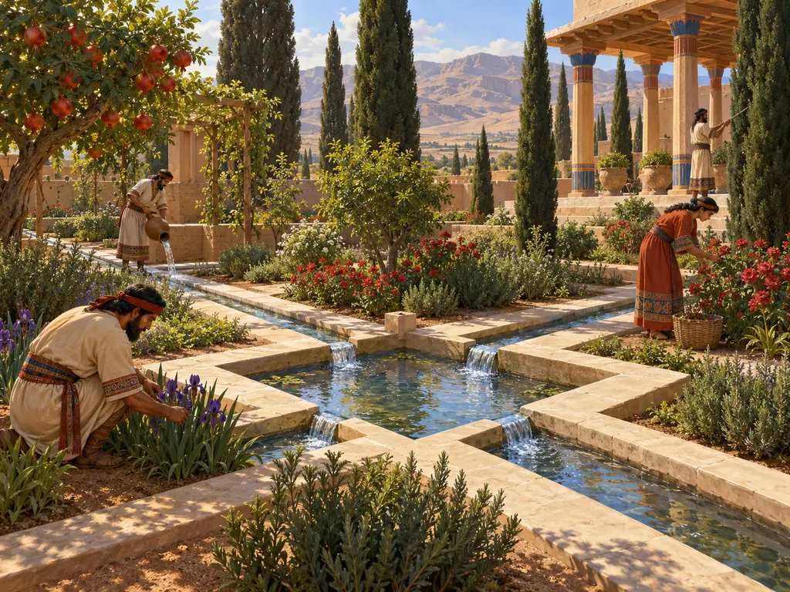
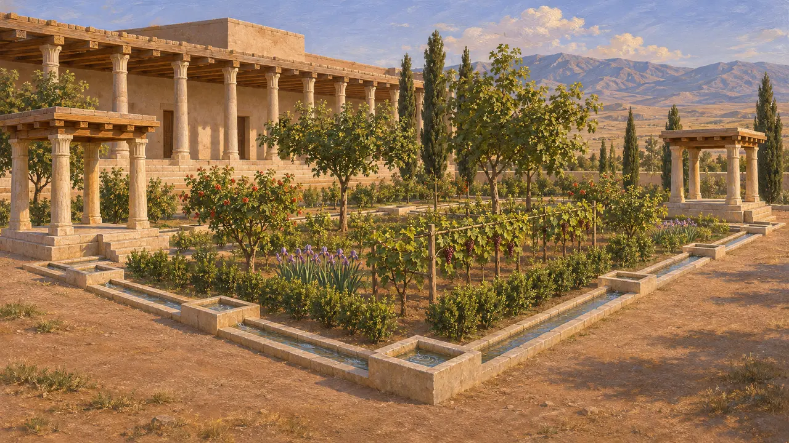
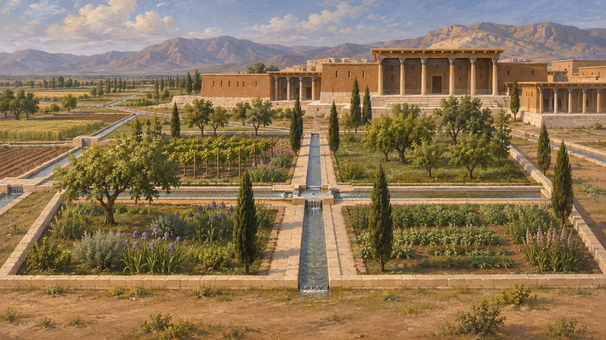
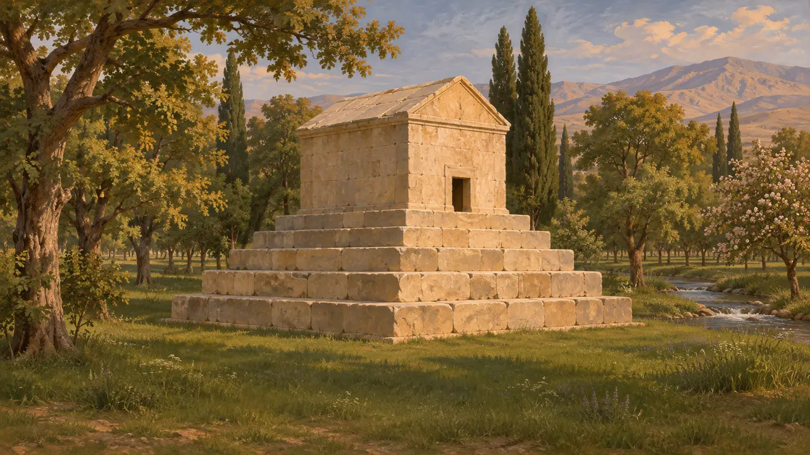
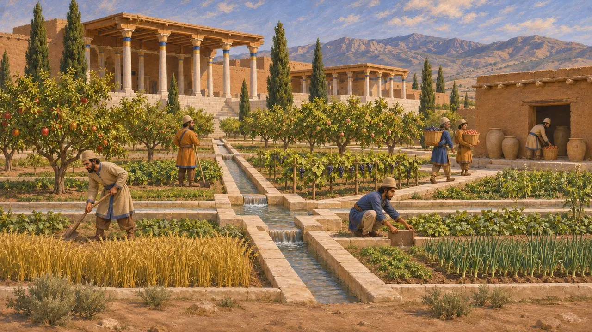
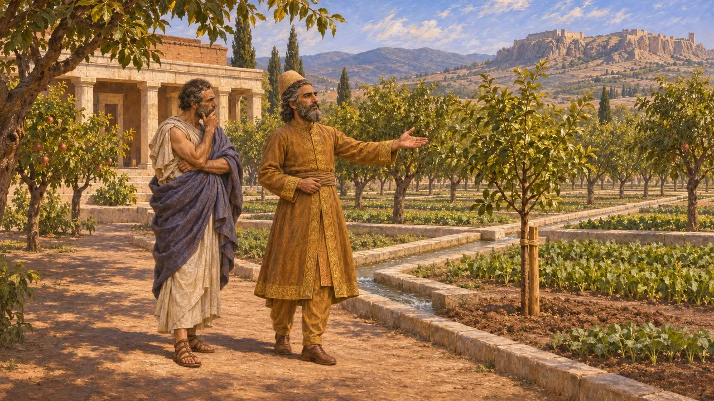

باغ شاهی
باغی با جویهای سنگی آب در کنار کاخهای پاسارگاد، حدود 540-530 پ.م.
در بازی: مرحلهٔ ۱: آرامگاه بنیانگذار
در پاسارگاد، کوروش بزرگ احتمالاً باغی کاشته در کنار کاخهایش طرح افکند که با جویهای باریکِ تراشیده از سنگ آهک آبیاری میشد. این احتمالاً کهنترین باغ شاهی پارسی است که نقشهاش بر زمین برجا مانده است. این باغ کاخ، آب و درخت را در چشماندازی یگانه برای شکوه شاهی به هم میپیوست، و نویسندگان یونانی بعدها واژهٔ پارسی اینگونه باغها را به صورت پارادئیسوس به زبان خود بردند.
در بازی: بازی باغ را بنایی یادمانی میشمارد که به هر خانه در شعاع شانزده خانه باغی میدهد. این سادهسازی است: باغ واقعی فضایی شاهی در کنار کاخها بود، نه امکانی همگانی برای مردم شهر.

جویهای میان کاخها
در اسنادکاوشهای دههٔ 1960 جویهای آب سنگی به پهنای حدود یکچهارم متر را یافت که گرداگرد زمینی مستطیلشکل در کنار کاخ مسکونی کشیده شده بودند. حوضچههای کوچک چهارگوش در فاصلههایی معین در دل جویها جای داده شده بود. دو کوشک کوچک در گوشههای باغ برپا بود و رواق دراز کاخ بر کِشت باغ چشمانداز داشت.
D. Stronach, Pasargadae, 1978

نقشهای چهاربخش یا چیزی بزرگتر
مورد مناقشهاستروناک باغ را به صورت مستطیلی بازسازی کرد که جویها و گذرگاهها آن را به چهار بخش تقسیم میکردند، و آن را نیای چهارباغ پارسی روزگاران بعد دانست. بررسی ژئوفیزیکی محوطه در آغاز دههٔ 2000 شبکهٔ گستردهتری از جویها را در سراسر دشت ردیابی کرد. اکنون تاریخنگاران بحث میکنند که آیا آرایش چهاربخشی قطعی است، و چه اندازه از این سامانه از آنِ کوروش است و چه اندازه از کارهای بعدی در روزگار داریوش.
R. Boucharlat and C. Benech, Organisation et aménagement de l'espace à Pasargades, 2002

باغِ گرداگرد آرامگاه
روایت باستانیآریان از آریستوبولوس بهره میگیرد که حدود دو سده پس از کوروش، همراه اسکندر پاسارگاد را دیده بود. او میگوید آرامگاه کوروش در میان پردیس شاهی، در بیشهای از درختان گوناگون با آب روان و علف انبوه، قرار داشت. استرابون نیز از همین منبع تصویری همانند به دست میدهد. آرامگاه با کاخها فاصله دارد، پس این پردیس احتمالاً چشماندازی کاشتهشده و گستردهتر بوده است، نه خودِ باغِ جویدار.
Arrian, Anabasis 6.29; Strabo 15.3.7

پردیس همچون نهادی شاهی
در اسنادگلنوشتههای باروی تخت جمشید، از روزگار داریوش، از املاکی نام میبرند که به عیلامی «پَرتِتَش» (partetaš) خوانده میشدند؛ این واژه از همان واژهٔ فارسی باستانی برآمده که در پسِ واژهٔ یونانی «پارادئیسوس» است. این املاک داراییهای شاهیِ ادارهشدهای بودند که در آنها درخت، کشت و انبار نگهداری میشد، و نه صرفاً باغهایی برای تفرج. باغ پاسارگاد نیز در همین الگوی گستردهتر جای میگیرد که شاه را مالک و آبادگر زمین مینمایاند.
P. Briant, From Cyrus to Alexander, 2002; W. Henkelman, The Other Gods Who Are, 2008

شاهی که درخت میکاشت
افسانهٔ متأخرگزنفون روایت میکند که کوروش کوچک، شاهزادهٔ پارسی، در حدود سال 407 پ.م. باغ خود را در سارد به لیساندر اسپارتی نشان داد. کوروش گفت که خود آن را طراحی کرده و بخشی از آن را به دست خود کاشته است. گزنفون این صحنه را درسی اخلاقی میسازد که فرمانروای نیک به کشاورزی اهمیت میدهد. این روایت به کوروشی متأخر مربوط است و آرمانی را شکل میدهد، پس نمیتواند مستقیماً باغ کوروش بزرگ را توصیف کند.
Xenophon, Oeconomicus 4.20-25
منابع
- D. Stronach, Pasargadae, 1978
- R. Boucharlat and C. Benech, Organisation et aménagement de l'espace à Pasargades, 2002
- Arrian, Anabasis 6.29
- Strabo 15.3.7
- P. Briant, From Cyrus to Alexander, 2002
- Xenophon, Oeconomicus 4.20-25